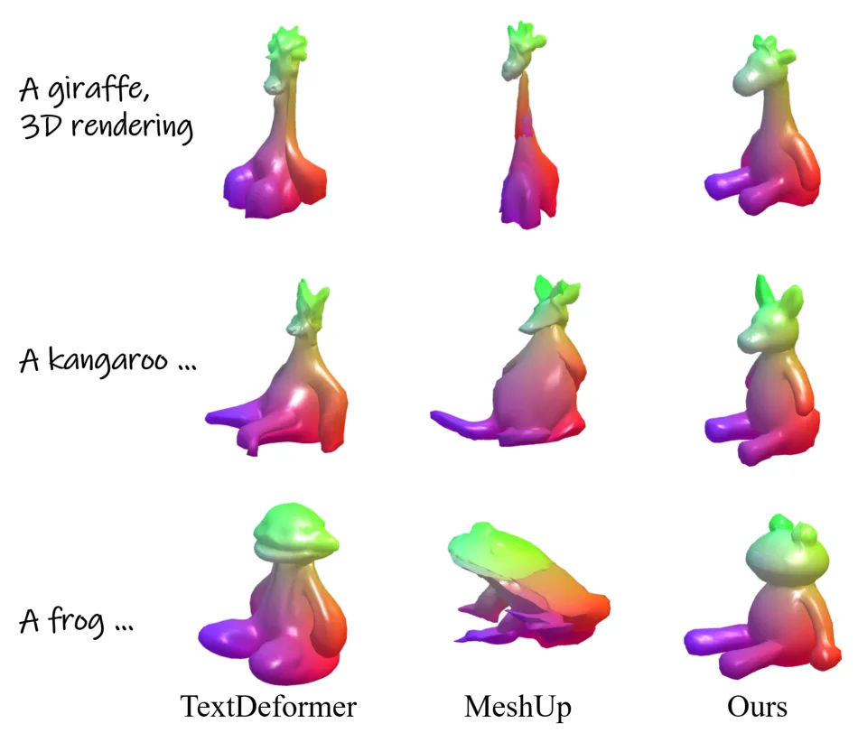
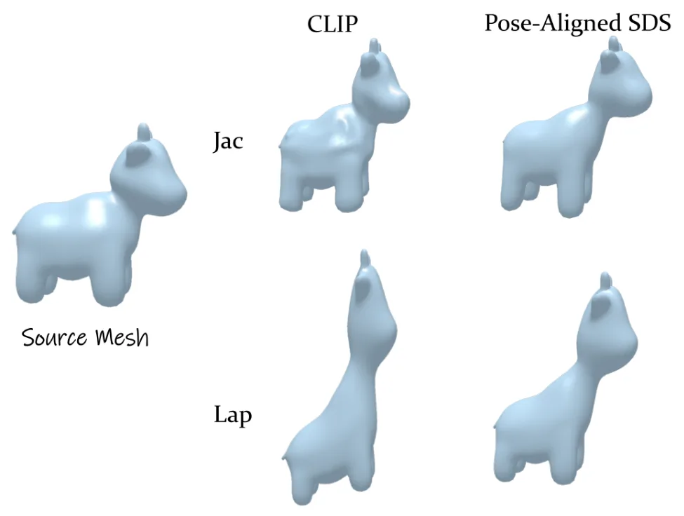
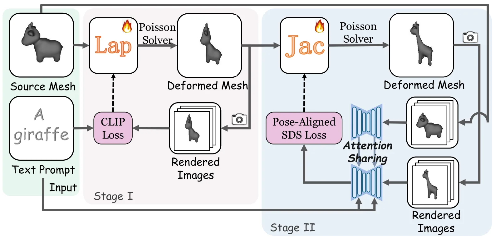
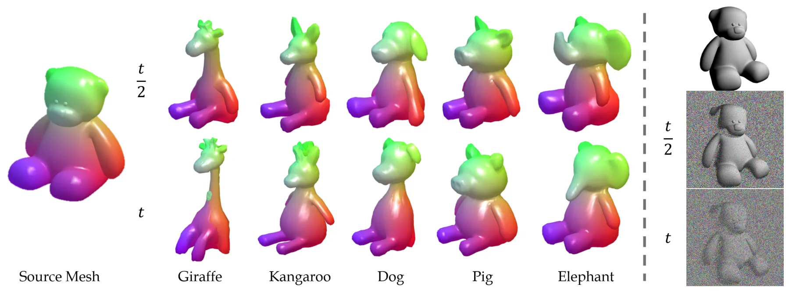
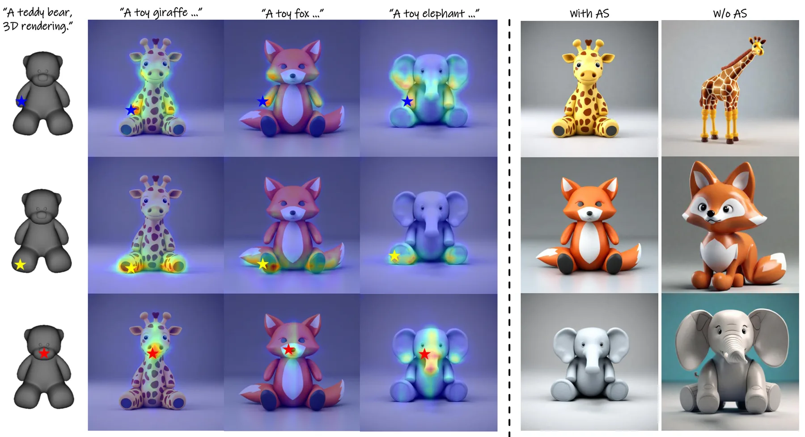

PoseAlign：通过文本引导形变雕刻姿态一致的网格PoseAlign: Sculpting Pose-Consistent Meshes via Text-Guided Deformation
属于三维网格编辑而非从观测重建，但可微网格表示和姿态约束损失对几何优化有参考价值；需警惕 SDS 生成细节的真实性。
一句话工作总结
以 Laplacian 完成平滑全局形变，再用 attention-sharing 的 pose-aligned SDS 雕刻细节并保持原始姿态。
摘要
PoseAlign 将文本引导网格形变拆分为全局姿态缩放和局部细节雕刻两个阶段。第一阶段采用可微 Laplacian 网格表示，以更高效率获得平滑全局形变；第二阶段提出 pose-aligned SDS loss，通过 attention-sharing 调整 score distillation sampling，在增加文本指定细节的同时保持初始网格姿态。实验表明该方法在文本对齐、姿态保持和网格质量之间取得较好平衡，并提供项目代码。
Mesh deformation, the process of altering the vertex positions of a 3D mesh while preserving its topological structure, is a cornerstone of computer graphics. Despite the recent emergence of numerous text-guided 3D mesh deformation methods, deforming an initial mesh into one that both adheres to text prompts and preserves its pose remains challenging. This paper proposes PoseAlign, which decomposes text-guided mesh deformation into two stages: global pose scaling and local detail sculpting. Specifically, in the first stage, we introduce the Laplacian as a differentiable mesh representation to enable more efficient yet smoother global deformation. Then, we propose a novel pose-aligned SDS loss by adapting score distillation sampling (SDS) with an attention-sharing mechanism, which sculptures fine-grained geometric details for the deformed mesh while preserving its original pose. PoseAlign significantly enhances the controllability of the overall deformation process, achieving a favorable balance between pose preservation and text alignment. Experiments demonstrate the competitive advantages of our method in text alignment and mesh quality. Code is available at: https://cousingrade6.github.io/PoseAlign
中文解读摘录
图表/页面预览

{kind=link}

{kind=link}

{kind=link}

{kind=link}

{kind=link}
